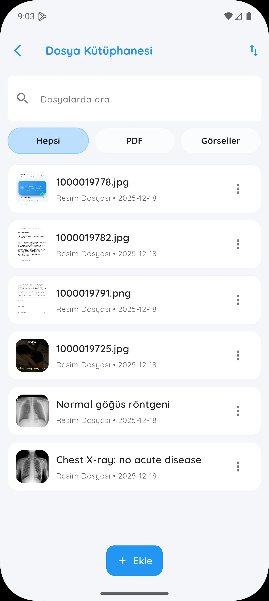
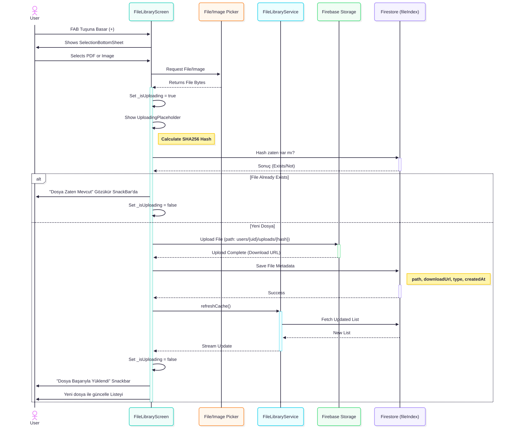
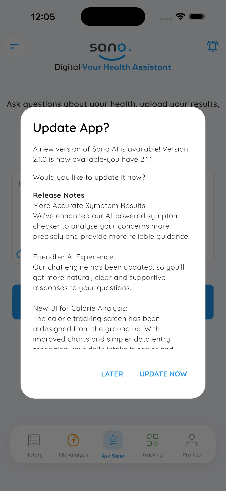
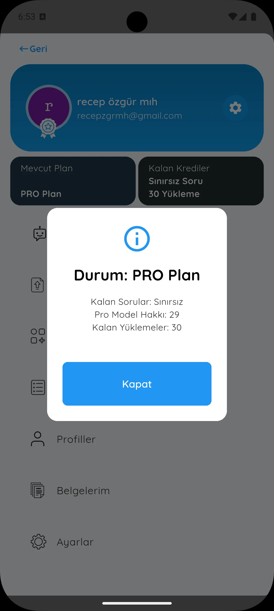
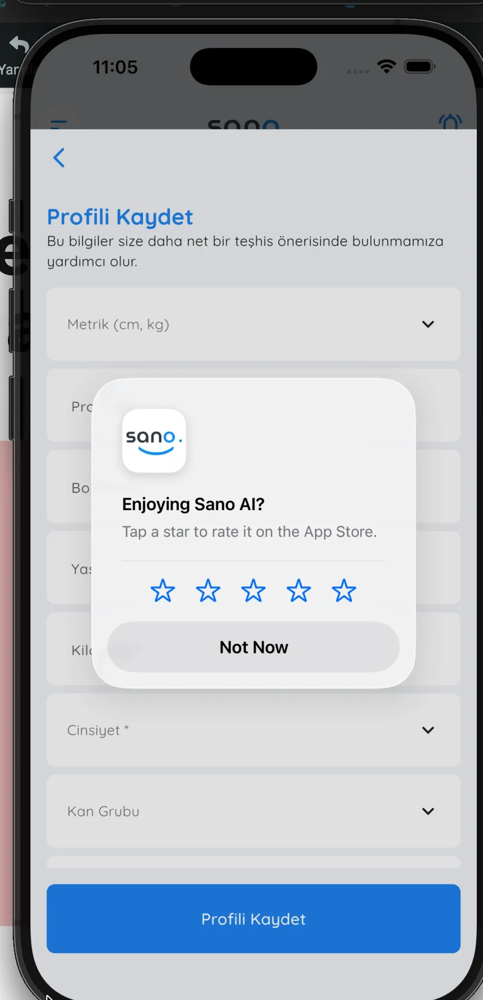
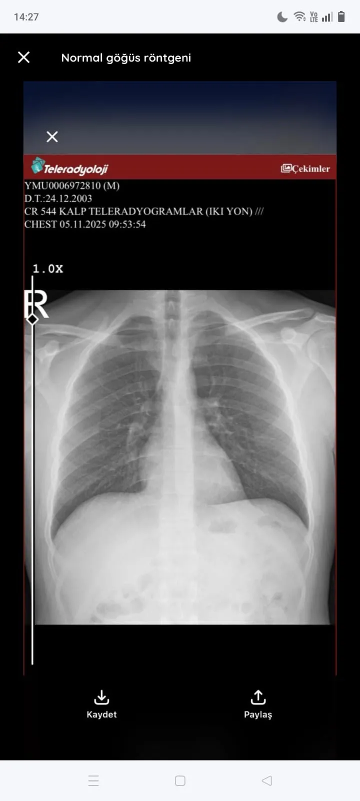
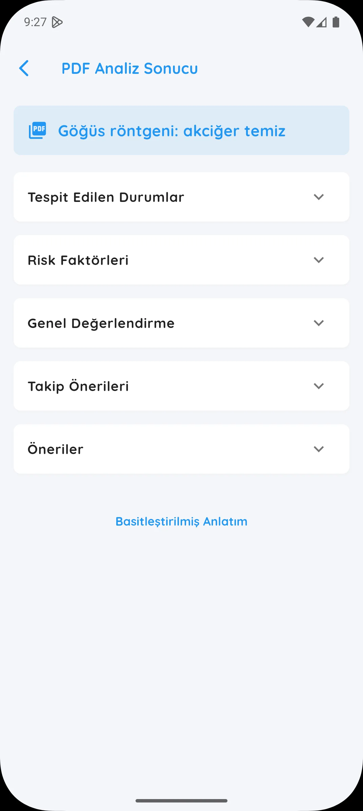

v2.1.4+128
Eklenenler
📁 Belgelerim Sekmesi
My_Drawer'a Belgelerim sekmesi eklendi. Kullanıcı daha önce analiz etmiş olduğu tüm belgeleri görebiliyor. İsterse bu ekran üzerinden yeni dosya yüklemesi gerçekleştirebiliyor ve dosya analizlerine bu ekran üzerinden ulaşım sağlayabiliyor. Yüklemiş olduğu belgenin analizi yoksa yine bu ekran üzerinden analiz edebiliyor.
- Bütün belgeleri görüntüleme
- PDF / görsel ayrımı
- İlgili belgeye tıklayınca açılan show bottom sheet modal
- Dosyanın analizi varsa "Analize git" seçeneği
- Dosyanın analizi yoksa "Analiz et" butonu
- Dosyayı silme seçeneği
- Yeni → Eski sıralama
- Dosyalarda arama gerçekleştirme
- Skeletonizer animasyonları

🔐 Dosya Hash & Duplicate Kontrolü
Kullanıcı bir belge yüklediği zaman bu belge hashleniyor ve Firebase üzerine yazılıyor. Eğer kullanıcı daha önce yüklemiş olduğu bir belgeyi bir kez daha yüklemek isterse bu hash kontrol ediliyor. Eğer hash aynı çıkarsa kullanıcı bu belgeyi yükleyemiyor.
📊 Upload Akışı (Hash + Dedup + Storage)

🎯 Diğer Yeni Özellikler
Arama Çubuğu
Geçmiş Sohbetler ekranına arama çubuğu eklendi
Su Takip Bildirimi
Kullanıcıya gönderilen su takip bildirimlerinin sesi değişti
iOS Güncelleme Dialogu
iOS'da da, uygulama güncellendiğinde Android'deki gibi uygulama güncelleme dialogu geliyor artık

Expert Mode Sayacı
Kullanıcıya expert modda kalan soru sayısı hakkı gösteriliyor. Artık expertUsage ve normalUsage olarak ayrılıyor veritabanında

Yorum İsteme Dialogu
Kullanıcıdan yorum istemek amacıyla kullanıcının karşısına bir dialog çıkarılıyor

📄 PDF ve Resim Görüntüleme
Kullanıcılar artık belgelerini uygulama içinde görüntüleyebilir. PDF ve görseller için özelleştirilmiş görüntüleyiciler eklendi.



🏷️ Belge İsimlendirme
Kullanıcının yüklemiş olduğu belgenin ismi artık akıllıca belirleniyor:
📦 Yeni Eklenen Paketler
| Paket | Versiyon |
|---|---|
| crypto | ^3.0.7 |
| cached_network_image | ^3.4.1 |
| skeletonizer | ^2.1.2 |
| firebase_storage | ^12.4.10 |
| syncfusion_flutter_pdfviewer | ^29.2.7 |
| in_app_review | ^2.0.10 |
Değişenler
Firebase Storage Entegrasyonu
Kullanıcının yüklemiş olduğu her türlü dosya Firebase Storage'da saklanıyor
Cache Optimizasyonu
Firebase Storage kullanımını azaltmak (maliyeti optimize etmek) için kullanıcının yüklemiş olduğu belgeler her görüntülemede download etmek yerine SharedPreferences ile kullanıcının cihazına kaydediliyor:
- Kullanıcı uygulamayı her yeniden açtığında bu cache okunuyor, Storage üzerinden okuma gerçekleştirilmiyor
- Kullanıcı ancak ve ancak uygulamadaki hesabından çıkış yaparsa bu bilgiler cache'den siliniyor
AnalysisResultScreen Yenilendi
Ekran renkleri değiştirildi ve daha modern bir görünüm kazandırıldı


Anonim Kullanıcı Desteği
Tüm kullanıcılar artık anonim bir şekilde trackerları kullanabiliyor ancak 3 kez herhangi bir işlem yaparsa karşısına hesabını yedeklemesi için bir dialog çıkıyor

Düzeltmeler
Düzeltilen Hatalar:
- Kullanıcı PDF analizi yaptıktan sonra, eski sohbetler ekranından görüntülerken oluşan parse hatası düzeltildi.
- Eski yapıda kalan
AnalysisDetailedScreenkaldırıldı; PDF analizinden sonra açılanAnalysisResultScreenpublic yapıldı ve artık bu ekran kullanılıyor.
